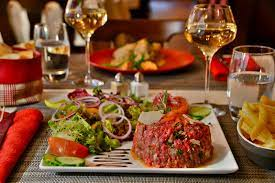

Piot Nathan
19 ans
Tout d'abord j'ai commencé par une seconde générale option science de l'ingénieure puis par la suite je
me suis
orienté vers une première science et technologie de l'industrie et du développement durable qui ne m'a pas
plus.
Après j'ai decouvert la menuiserie j'ai donc effectuer un CAP menuisier agenceur en deux ans que j'ai obtenue
mention très bien, malgré ce très beau métier j'avais encie de concrétiser mon projet de l'informatique alors je
me suis inscrit a la formation La Toile a l'EM Lyon qui est une formation préquilafiante en de devellopement
web.
Compétences
Francais:
Anglais:
Html:
CSS:
JavaScript:
Menuiserie Agencement:
Projets
Projets CAP 2022/2023 :
Cap blanc :

Ceci est mon épreuve du CAP blanc qui c'est dérouler en mars 2023 et que j'ai réussie avec de très bons résultats. C'est une petite table composer d'un tiroir en médium et en bois massif.
Épreuve CAP :


Ceci est mon épreuve du CAP qui c'est dérouler en juin 2023 pendant trois jours j'ai construit cette table de chevet fixable a un mur en bois massif et médium avec une tablette stratifiée et un tiroir dans le compartiment du bas le tout est bien sûr laqué.
Premier projets Html Css a la formation la toile :
Premier projet html et css sur le site d'un restaurant avec barre de navigation, tableau, formulaire, etc
06-95-24-57-24
nath69.piot@gmail.com